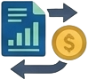

⚙️ Moteur de portefeuille — Modèle mathématique
💡 Vue d'ensemble
Cette page définit formellement le modèle mathématique qui sous-tend le moteur de calcul de portefeuille de LibreFolio. Toutes les autres pages d'indicateurs (NAV, Valeur comptable, P&L période, Rendement sur coût, PRU, Capital versé) renvoient à cette page pour leurs règles de calcul précises.
📐 1. Notation et ensembles
| Symbole | Signification |
|---|---|
| \(V(u)\) | Tous les courtiers visibles par l'utilisateur \(u\) |
| \(S \subseteq V(u)\) | Périmètre de courtiers sélectionné (filtré) |
| \(A\) | Ensemble des actifs avec positions |
| \(C^*\) | Devise cible |
| \([t_0, t_1]\) | Fenêtre d'évaluation demandée |
| \(q(a,b,t)\) | Quantité de l'actif \(a\) chez le courtier \(b\) à la date \(t\) |
| \(p(a,t)\) | Prix de valorisation de l'actif \(a\) à la date \(t\) |
| \(\mathrm{fx}(c_1, c_2, t)\) | Taux de change de la devise \(c_1\) vers \(c_2\) à la date \(t\) |
📐 2. Prix de valorisation
- Le résolveur unifié est l'unique cerveau de valorisation :
MARKET → TRADE_AVG → CARRIED → MISSING. - Les cotations de marché et les transactions ACHAT/VENTE sont des observations. Un AJUSTEMENT ne l'est jamais, entrant ou sortant, avec ou sans coût de base : son coût de base est un coût, pas ce que l'actif valait ce jour-là.
- Le coût d'un TRANSFERT entrant (son coût de base unitaire, dans la devise du coût de base) est une observation TRADE, estimée, seulement tant que l'actif n'a, à ce jour ou avant, ni cotation de marché ni autre opération — ni ACHAT ni VENTE, ni AJUSTEMENT, ni transfert sortant ; les autres transferts entrants ne l'arrêtent pas. Elle est reportée jusqu'à ce qu'une cotation ou une transaction réelle la remplace, et ne supplante jamais l'une d'elles : un titre coté déplacé entre courtiers conserve sa cotation reportée (Coût de transfert comme estimation).
CARRIEDest le report de la dernière observation (last-observation-carried-forward). Il porte la métadonnée d'obsolescencedays_back.estimated=Truesignifie une origine TRADE. Une cotation MARKET reportée et obsolète est obsolète, pas estimée.- Les valorisations restent dans leur devise d'origine ; chaque consommateur convertit vers \(C^*\) à la date de valorisation \(t\).
- Le taux de change du coût de base reste fixé à la date de la transaction.
- La trésorerie reste dans la devise dans laquelle elle a été enregistrée, courtier par courtier, et est valorisée au taux de \(t\) (§5) ; chaque mouvement de trésorerie est toujours comptabilisé, et chaque flux de trésorerie externe entre dans le capital, au taux de sa propre date.
- Le PRU n'est jamais utilisé comme prix de valorisation. Une position dont l'actif n'a aucune valorisation (\(\varnothing\)) est comptée à son coût de base à la place, comme estimation déclarée, non comme prix (§3).
Voir Résolution des prix pour le contrat du résolveur et la sémantique de qualité des données.
📐 3. État de position
Une position \((a, b)\) est détenue à \(t\) lorsque sa quantité dépasse le seuil de résidu \(\varepsilon = 10^{-5}\) unités : \(q(a,b,t) > \varepsilon\). Pour chaque position détenue :
Où \(w(a,b,t)\) est le prix de revient unitaire (PRU) de la position \((a,b)\) à la date \(t\), conservé en \(C^*\) aux taux historiques (§4) : le coût de base ne prend aucun taux de change à \(t\), de sorte que, pour un actif étranger, l'effet de change fait partie de \(\mathrm{UGL}\).
Le second cas couvre un actif qui n'a encore aucune observation — aucune cotation, aucun ACHAT ou VENTE et aucune estimation de coût de transfert à \(t\) ou avant, comme pour une position reçue par ajustements, ou via des transferts sans coût de base. La position est valorisée à son coût de base, source de valorisation ESTIMATED_AT_COST : une estimation déclarée, non un prix. Elle ne rapporte aucun prix unitaire, ne bouge pas avec les taux de change, et son \(\mathrm{UGL}\) est nul, sans effet de prix ni effet de change. Le choix est fait jour par jour, sans anticipation : dès la première observation, la valorisation l'emporte, même ancienne et reportée. Une position dont le coût est incomplet (§4) n'a pas de valeur de marché ce jour-là (MISSING) et est exclue de \(\mathrm{MV}(t)\). Les sources de valorisation se classent donc MARKET_PRICE > LAST_TRADE_PRICE > ESTIMATED_AT_COST > MISSING (Résolution des prix).
Une quantité inférieure ou égale à \(\varepsilon\) unités — le résidu qu'une vente de presque toutes les unités peut laisser — n'est pas détenue : elle n'a pas d'état de position, donc pas de valeur de marché, pas de coût de base, pas de tranche d'allocation et pas d'instantané, et un résidu sans valorisation ne rend pas la journée incomplète. Le même seuil décide quelles positions les lignes de Performance retiennent (§7), de sorte que le portefeuille et ses lignes comptent les mêmes positions ; l'endroit où va le coût du résidu est indiqué au §7.
📐 4. Mise à jour itérative du PRU
Maintenu par position \((a,b)\) avec l'état du pool \((\hat{q}, \hat{c})\), le coût \(\hat{c}\) étant conservé en \(C^*\) :
Acquisition (qté \(> 0\), montant \(P\) payé dans la devise \(c\) à la date \(d\)) :
\(P\) est la trésorerie payée pour un ACHAT, ou le coût de base unitaire de remplacement multiplié par \(q_{\text{tx}}\) pour un TRANSFERT ou un AJUSTEMENT ; \(\mathrm{fx}(C^*, C^*, d) = 1\). Lorsqu'aucun taux n'existe à \(d\) ou avant, ou que l'acquisition n'a pas de coût de base, la quantité entre et le coût n'entre pas : le coût de la position est marqué incomplet au lieu d'être compté comme zéro.
Réduction (qté \(< 0\)) :
Division (liée à un événement de division) : \(\hat{q}\) change, \(\hat{c}\) ne change pas.
Ordre d'application
Au sein d'une même date : les ajouts sont traités avant les réductions. Cela garantit qu'une VENTE utilise le PRU correct, y compris les ACHATS du même jour.
📐 5. Agrégation du portefeuille
\(\mathrm{MV}(t)\) et \(\mathrm{OCB}(t)\) portent sur les positions détenues à \(t\) (§3) : le résidu, au seuil ou en dessous, ne figure ni dans l'un ni dans l'autre, donc ni dans NAV ni dans Book.
\(\mathrm{Cash}(t)\) est la trésorerie de chaque courtier, conservée dans les devises dans lesquelles elle a été enregistrée et valorisée au taux de \(t\) :
où \(N_{b,c}(t)\) est le solde du courtier \(b\) dans la devise \(c\) après ses mouvements datés de \(t\) ou avant, mis à l'échelle de la part de propriété du courtier, et \(\mathrm{fx}(c, C^*, t)\) est le dernier taux à \(t\) ou avant (\(1\) pour \(c = C^*\)). Le même terme figure dans NAV et dans Book, donc l'effet de change sur les liquidités s'annule dans UGL : il est comptabilisé comme résultat de change (§6) et appartient au P&L total.
🔀 Deux montants de P&L latent
\(\mathrm{InTransit}(t)\) et \(\mathrm{InTransitBook}(t)\) contiennent la même trésorerie en transit, et les titres qui voyagent entre deux courtiers de \(S\) à leur valeur de marché, \(\mathrm{MV}^{\mathrm{tr}}(t)\), dans le premier et à leur coût historique, \(\mathrm{CB}^{\mathrm{tr}}(t)\), dans le second. La trésorerie s'annule, donc avec \(\mathrm{OCB}(t)\) le coût de base des positions détenues (§3) :
Le moteur rapporte deux montants de P&L latent :
| Montant | Définition | Où il apparaît |
|---|---|---|
| P&L latent du portefeuille | \(\mathrm{UGL}(t) = \mathrm{NAV}(t) - \mathrm{Book}(t)\), titres en transit inclus | unrealized_gain_loss du résumé et des points d'historique du rapport de portefeuille (POST /portfolio/report) et des résumés de portefeuille et de courtier de l'export IA ; Valeur comptable — P&L latent |
| P&L latent de période | \(\mathrm{MV}(t) - \mathrm{OCB}(t)\) à chaque borne de période, positions détenues uniquement | period_unrealized_gain_loss_start, _end, _delta et leur ventilation par devise ; la Variation non réalisée du tableau de bord ; le \(\Delta\mathrm{UGL}\) du P&L période et les lignes par position du §7 |
Ils ne diffèrent que par les titres en transit : un jour où aucun ne voyage, ils sont égaux. Un titre en transit à une borne de période figure dans la NAV, donc dans le P&L période, mais dans l'état d'aucune position : sa part du résultat se trouve dans le résidu du §7, pas dans \(\Delta\mathrm{UGL}\).
🏦 Le courtier dans son ensemble
Chaque montant du courtier \(b\) — ses quantités, sa trésorerie et ses flux — compte selon la part de propriété \(s_b\) du courtier : la part d'un propriétaire, \(1\) pour un éditeur ou un lecteur. La vue courtier entier, destinée à la page du courtier, fixe \(s_b = 1\) pour chaque courtier, comme le voit un éditeur, quelle que soit la part de l'utilisateur ; le tableau de bord conserve la part du propriétaire. Un courtier valant 10 000 € détenu à 30 % vaut 3 000 € sur le tableau de bord et 10 000 € en entier ; détenu à 0 %, 0 € et 10 000 €.
Pour un seul courtier, les ratios sont les mêmes dans les deux vues : chaque flux et chaque valeur est multiplié par la même constante \(s_b\), qui s'annule dans TWRR, MWRR, le ROI simple, les poids et les pourcentages de période. Seuls les montants changent.
📐 6. Modèle de trésorerie à trois pools — Par courtier \((K_b, R_b, W)\)
Trois pools d'accumulation suivent la provenance de la trésorerie. \(K\) et \(R\) sont maintenus par courtier \(b\) ; \(W\) est global (sort entièrement du système).
| Pool | Portée | Signification |
|---|---|---|
| \(K_b\) | Par courtier | Capital externe encore présent chez le courtier \(b\) sous forme de trésorerie |
| \(R_b\) | Par courtier | Rendements générés encore présents chez le courtier \(b\) sous forme de trésorerie |
| \(W\) | Global | Rendements sortis du système (masqués, restaurables lors d'un nouveau dépôt) |
Propriété clé
Un ACHAT sur le courtier \(b_1\) ne peut consommer que \(R_{b_1}\), jamais \(R_{b_2}\). La trésorerie ne se téléporte pas entre courtiers — seuls les virements explicites déplacent les soldes des pools.
🔁 Règles de mise à jour (par transaction sur le courtier \(b\), chronologiques)
| Icône et type | Formules de mise à jour | Logique et description |
|---|---|---|
DÉPÔT \(D > 0\) |
\(r = \min(D,\, W)\) \(R_b \mathrel{+}= r\) \(W \mathrel{-}= r\) \(K_b \mathrel{+}= D - r\) |
Restaure d'abord les rendements précédemment retirés depuis le compteur global \(W\), puis ajoute le reste au capital \(K_b\). |
RETRAIT \(X > 0\) |
\(k = \min(X,\, K_b)\) \(K_b \mathrel{-}= k\) \(\rho = \min(X - k,\, R_b)\) \(R_b \mathrel{-}= \rho\) \(W \mathrel{+}= \rho\) |
Consomme d'abord le capital \(K_b\), puis déplace les rendements restants \(\rho\) vers le compteur global \(W\). |
| DIVIDENDE / INTÉRÊT \(I > 0\) |
\(R_b \mathrel{+}= I\) | Les rendements augmentent directement le pool de rendements \(R_b\). |
| FRAIS / IMPÔT \(F > 0\) |
\(R_b \mathrel{-}= F\) \(\text{si } R_b < 0 \text{ : } K_b \mathrel{+}= R_b,\; R_b = 0\) |
Consomme d'abord les rendements \(R_b\) ; si \(R_b\) devient négatif, il ponctionne le capital \(K_b\). |
ACHAT \(B > 0\) |
\(\rho = \min(B,\, R_b)\) \(R_b \mathrel{-}= \rho\) \(K_b \mathrel{-}= (B - \rho)\) |
Consomme d'abord les rendements \(R_b\), puis ponctionne le reste sur le capital \(K_b\). |
 VENTE |
\(G = P - C\) \(K_b \mathrel{+}= C\) \(R_b \mathrel{+}= G\) \(\text{si } R_b < 0 \text{ : } K_b \mathrel{+}= R_b, \quad R_b = 0\) |
Le coût de base $C = |
| VIREMENT / CONVERSION FX (Interne, \(s \to d\), \(X > 0\) sort, \(Y > 0\) arrive) |
Jambe de départ (\(s\)) : \(\rho = \min(X,\, R_s)\) \(R_s \mathrel{-}= \rho\) \(\kappa = X - \rho\) \(K_s \mathrel{-}= \kappa\) Jambe d'arrivée (\(d\)) : \(K_d \mathrel{+}= \kappa\) \(R_d \mathrel{+}= \rho + (Y - X)\) \(\text{si } R_d < 0 \text{ : } K_d \mathrel{+}= R_d,\; R_d = 0\) |
Le départ prend d'abord les rendements \(R_s\), puis le capital \(K_s\). L'arrivée rapporte ce que le départ a pris à chaque pool. \(X\) et \(Y\) sont en \(C^*\) au taux de la date propre à chaque jambe, chacun pondéré par la part de propriété de son courtier, de sorte qu'ils peuvent différer : un spread de conversion par rapport au taux de référence, la variation du taux pendant que la trésorerie voyage, deux courtiers détenus à des parts différentes. Aucune des deux jambes n'est un flux externe, donc la base de capital ne bouge pas et le P&L total compte déjà l'écart \(Y - X\) : c'est un résultat, comptabilisé comme le résultat de change sur les liquidités au repos — un gain pour les rendements, une perte prélevée d'abord sur les rendements puis sur le capital, comme des FRAIS. Avec \(Y = X\) : \(K_d \mathrel{+}= \kappa\), \(R_d \mathrel{+}= \rho\). Une CONVERSION FX a ses deux jambes chez le même courtier (\(s = d\)), dans deux devises. Le compteur global \(W\) n'est jamais touché (le capital reste à l'intérieur du système). |
| VIREMENT / CONVERSION FX (Jambe externe ou orpheline sur \(b\) : \(Y > 0\) arrive, ou \(X > 0\) sort) |
Entrante (\(Y\)), comme un DÉPÔT : \(r = \min(Y,\, W)\) \(R_b \mathrel{+}= r\) \(W \mathrel{-}= r\) \(K_b \mathrel{+}= Y - r\) Sortante (\(X\)), comme un RETRAIT : \(k = \min(X,\, K_b)\) \(K_b \mathrel{-}= k\) \(\rho = \min(X - k,\, R_b)\) \(R_b \mathrel{-}= \rho\) \(W \mathrel{+}= \rho\) |
Une jambe dont l'autre jambe se trouve chez un courtier hors de \(S\), ou qui a perdu sa paire — le lien effacé, ou la ligne appariée disparue — est un flux externe : la base de capital la compte à son montant, comme un dépôt ou un retrait. Ses pools évoluent comme le feraient ce dépôt ou ce retrait : une arrivée restaure d'abord les rendements retirés \(W\) dans \(R_b\), le reste est du capital \(K_b\) ; un départ prend d'abord le capital \(K_b\), puis les rendements \(R_b\), qui vont dans \(W\). Contrairement à une paire interne, cette jambe touche \(W\), et elle n'enregistre ni ne reprend de répartition. |
Par exemple, avec \(C^* = \mathrm{EUR}\), un courtier avec \(K = 1000\), \(R = 300\) convertit 650 EUR en 715 USD à un taux de référence de 0.92 EUR par USD (\(Y = 657.80\)) : ensuite \(K = 1000\) et \(R = 307.80\) — le capital est toujours égal à ce qui a été déposé, et le spread de 7.80 est un résultat. Entre courtiers détenus à des parts différentes, \(A\) à 100 % envoyant 400 à \(B\) à 50 % donne \(X = 400\), \(Y = 200\) : une perte de 200, prélevée d'abord sur les rendements.
Chaque départ enregistre sa répartition \((\rho, X)\) jusqu'à ce que son arrivée la reprenne, une fois. Une arrivée dont le départ est inconnu — aucune répartition enregistrée, ou \(X = 0\) — va entièrement dans \(K_d\). Lorsque les deux jambes tombent le même jour, l'arrivée est appliquée après les autres mouvements de ce jour, quels que soient leurs identifiants de transaction, afin qu'elle retrouve toujours la répartition de son départ. Un virement ou une conversion dont l'autre jambe est hors de \(S\), ou qui a perdu sa paire, n'est pas interne et ne suit pas cette règle : il déplace les pools comme un DÉPÔT ou un RETRAIT (la ligne ci-dessus). Dans une vue du seul courtier \(B\), \(650\) arrivant d'un courtier \(A\) hors de la vue fait détenir à un \(B\) vide \(K_B = 650\), \(R_B = 0\) ; un \(B\) détenant \(K_B = 100\), \(R_B = 100\) termine à \(K_B = 750\), \(R_B = 100\). Si le \(B\) détenant \(K_B = 100\), \(R_B = 100\) envoie \(150\) hors de la vue à la place, il conserve \(K_B = 0\), \(R_B = 50\), et \(W = 50\) : le prochain flux entrant — un dépôt ou une autre jambe venant de l'extérieur — restaure d'abord ces \(50\) dans \(R_B\), et un ACHAT ultérieur dépense d'abord \(R_B\), comme d'habitude. Dans la vue de \(A\) et \(B\) ensemble, la même paire est interne et suit la règle ci-dessus.
Si les dates de départ et d'arrivée diffèrent, le virement est en transit : soustrait du courtier \(s\) le jour du départ, ajouté à \(d\) le jour de l'arrivée. Entre ces dates, \(\sum K_b + \sum R_b < \mathrm{Cash}_{\text{like}}\), l'écart étant égal au montant en transit — la réconciliation ci-dessous lit cette trésorerie avec la composition actuelle des pools jusqu'à ce que l'arrivée rapporte la répartition du départ.
💱 Résultat de change sur les liquidités en devises
Chaque mouvement de trésorerie entre dans la trésorerie du courtier, et dans ses pools, au taux de sa propre date ; le solde détenu ensuite suit le taux (§5). Chaque jour \(t\) où le taux d'une devise étrangère détenue en trésorerie dans \(S\) change — son premier taux connu inclus —, après les mouvements de trésorerie de ce jour et avant que les transactions de ce jour ne mettent à jour les pools, chaque courtier \(b\) détenant de la trésorerie en devise étrangère est réévalué :
\(\mathrm{Cash}^{\text{replay}}_b(t)\) est la trésorerie que le rejeu porte pour \(b\) : sa valeur lors de la réévaluation précédente plus chaque mouvement ultérieur au taux de sa propre date. Un gain va dans les rendements ; une perte les consomme d'abord, puis le capital, exactement comme des FRAIS. La base de capital ne bouge pas : un résultat de change est un résultat, non une contribution, il figure donc dans la NAV, le P&L total, le ROI, le TWRR et le MWRR, jamais dans le capital versé.
🧮 Agrégation pour la sortie
⚖️ Invariant de réconciliation
Les deux pools sont d'abord bornés à zéro par courtier. Si les pools ne sont pas vides et que l'écart dépasse encore \(0.01\), les pools sommés sont mis à l'échelle de \(\mathrm{Cash}_{\text{like}}\), la trésorerie plus la trésorerie en transit — une mise à l'échelle agrégée, non par courtier, chaque résultat étant borné inférieurement par zéro :
Sinon \(\mathrm{CashFromCapital}(t) = \min\bigl(\sum_b K_b(t),\, \mathrm{Cash}_{\text{like}}(t)\bigr)\) et \(\mathrm{CashFromReturns}\) est le reste, borné inférieurement par zéro. Les résultats de change sur les liquidités au repos sont comptabilisés dans les pools (ci-dessus) ; la mise à l'échelle absorbe deux dérives :
- Trésorerie en transit. Le départ a quitté les pools, tandis que \(\mathrm{Cash}_{\text{like}}\) compte encore la trésorerie en transit — et la variation de son taux de change pendant qu'elle voyage — donc \(\sum K_b + \sum R_b < \mathrm{Cash}_{\text{like}}\). Jusqu'à l'arrivée, la mise à l'échelle lit cette trésorerie avec la composition actuelle des pools. Un courtier avec \(K = 1000\), \(R = 300\) envoie \(650\) en \(C^*\) à un courtier vide de \(S\) : il conserve \(K = 650\), \(R = 0\), l'échelle vaut \(1300 / 650 = 2\), donc \(\mathrm{CashFromCapital} = 1300\) et \(\mathrm{CashFromReturns} = 0\) pendant le transit. À l'arrivée, la répartition revient : \(1000\) et \(300\).
- Trésorerie négative (découvert). Les deux pools sont bornés à zéro par courtier, donc un courtier dont la trésorerie passe sous zéro laisse des pools qui ne totalisent plus sa trésorerie — également les jours suivants, puisque les valeurs bornées à zéro sont conservées.
📐 7. Contribution de la période
Pour la période \([t_0, t_1]\), par position \((a,b)\) :
Ensemble des positions contributrices :
\(\mathrm{UGL}(a,b,t)\) est l'état de position du §3 à la fin du jour \(t\), celui que le portefeuille agrège (§5) : la valorisation du §2 — une valorisation issue d'une transaction, retraitée pour toute division ultérieure —, le coût de base lorsque l'actif n'a aucune valorisation, le taux de change de \(t\) lui-même. Une position non détenue à \(t\) compte 0. Une position détenue à \(t\) dont \(\mathrm{UGL}(a,b,t)\) est inconnu — aucun taux, un coût incomplet — rend \(\Delta\mathrm{UGL}(a,b)\) inconnu, jamais le côté connu moins zéro. Lorsque chaque ligne est connue, les lignes s'additionnent pour donner la variation du portefeuille, celle des positions détenues — le P&L latent de période du §5, titres en transit exclus :
L'identité tient aussi avec le résidu : une ligne et l'état de portefeuille du §3 utilisent le même seuil, donc une position laissée avec \(10^{-5}\) unités ou moins n'est détenue d'aucun côté — aucune valeur, aucun P&L latent, dans aucune ligne et pas dans \(\Delta\mathrm{UGL}\). Son coût quitte le coût de base ouvert sans être vendu, donc il n'est ni dans \(\Delta\mathrm{UGL}\) ni dans Realized : il se retrouve dans le résidu de la période (ci-dessous).
Transferts internes. \(T(a,b)\) répartit le résultat d'un titre déplacé entre deux courtiers de \(S\) : chaque courtier répond de sa propre portion. Pour chaque TRANSFERT lié de \(a\) du courtier \(s\) au courtier \(d\) qui part après \(t_0\) et arrive à \(t_1\) ou avant, avec \(V\) la valeur des unités déplacées le jour de l'arrivée (§3) et \(C\) le coût historique que le pool de l'expéditeur a abandonné pour elles (§4) :
L'expéditeur répond des unités jusqu'à leur arrivée, transit inclus, le destinataire à partir de leur arrivée ; les termes s'annulent, donc le total est inchangé. Un transfert déjà en transit à \(t_0\), encore en transit à \(t_1\), ou avec \(V\) ou \(C\) inconnu n'ajoute rien : les valeurs aux bornes restent inchangées.
Exemple : 10 unités déplacées du courtier A au courtier B
A détient 10 unités achetées à 80 (\(C = 800\)). Le prix est de 100 à \(t_0\), de 120 le jour où elles passent à B (\(V = 1{,}200\)), de 150 à \(t_1\) :
A répond de 100 → 120, B de 120 → 150 : +500 au total, le \(\Delta\mathrm{UGL}\) du portefeuille (\(700 - 200\)). Sans \(T\), A afficherait −200 et B +700.
Le P&L période au niveau du portefeuille expose également un résidu :
Comme l'UGL ne peut pas contenir le résultat de change sur les liquidités (§5), Other se décompose en deux parties : le résultat de change de chaque courtier sur la période et le reste.
Les frais/revenus non alloués sans asset_id sont regroupés par courtier comme autres effets de période, tout comme \(\mathrm{FXonCash}_b\) : une ligne par courtier détenant de la trésorerie en devise étrangère, affichée lorsque son résultat n'est pas nul. Voir P&L période — Effet de change sur les liquidités.
Lorsque chaque ligne est connue, les lignes et les autres effets de période bouclent ensemble \(\mathrm{PnL}_{period}\). Comme les lignes sont valorisées de la même manière que le portefeuille, le résidu ne contient aucune différence de valorisation entre elles, seulement ce qu'aucune position ne porte : ce qui voyage entre deux courtiers, le coût d'un change de devises, une sortie laissée hors du P&L réalisé, le coût du résidu.
Exemple : une vente qui laisse 0.00001 unité
10 unités sont achetées à 100,000 avant la période, et le prix est de 100,000 à \(t_0\) : la NAV est de 1,000,000 et le P&L latent est de 0. À l'intérieur de la période, 9.99999 unités sont vendues à 120,000 pour 1,199,998.80 : le P&L réalisé est de \(9.99999 \times 20{,}000 = 199{,}999.80\), et il reste 0.00001 unité ; le prix est aussi de 120,000 à \(t_1\), donc elles valent 1.20 pour un coût de 1.00. C'est un résidu : il ne figure dans aucune ligne ni dans la NAV, donc le \(\Delta\mathrm{UGL}\) de la ligne et celui du portefeuille valent tous deux 0, et la NAV à \(t_1\) est la trésorerie de la vente. \(\mathrm{PnL}_{period} = 1{,}199{,}998.80 - 1{,}000{,}000 = 199{,}998.80\), et
le coût du résidu. S'il était valorisé dans la NAV, le résidu aurait injecté \(1.20 - 1.00 = 0.20\) dans le \(\Delta\mathrm{UGL}\) du portefeuille qu'aucune ligne ne portait.
📐 8. Plus-value/moins-value réalisée
Lors d'une sortie de \(|q_s|\) unités de la position \((a,b)\) à la date \(t\) — une VENTE, ou un AJUSTEMENT sortant non lié à une division :
\(P\) est ce que les unités rapportent en sortie, dans sa devise \(c_P\) : le produit d'une VENTE, dans la devise de sa trésorerie ; \(0\) pour un AJUSTEMENT sortant, qui n'a aucune valeur quel que soit le coût de base porté par la ligne (Ajustements sortants), de sorte qu'il réalise \(-C\). \(w_{\text{pre}}\) est le PRU en \(C^*\) avant la réduction du pool (même valeur que celle utilisée par la règle VENTE à 3 pools ci-dessus) : les unités sortent à leur coût historique, sans conversion à \(t\), tandis que \(P\) est converti à \(t\). Une sortie dont \(P\) ne peut pas être converti, ou prélevée d'une position dont le coût est incomplet, est laissée hors du P&L réalisé.
Un AJUSTEMENT sortant ne déplace aucune trésorerie, donc aucun pool du §6 ne change, ni aucun capital : la base de capital ne bouge pas (Capital versé — Ajustements sortants).
📐 9. Un seul rejeu quotidien
| Plage | Plage de dates | Rôle |
|---|---|---|
| Rejeu | \([\min(t_{\mathrm{first}},\ t_0),\ t_1]\) | Chaque jour, avec les mêmes règles : trésorerie, quantité, PRU, pools, prix, taux de change, états de position et de portefeuille |
| Fenêtre | \([t_0,\ t_1]\) | Les jours dont les états sont renvoyés |
Il y a un seul rejeu, du premier mouvement \(t_{\mathrm{first}}\) (ou \(t_0\), s'il est antérieur) à \(t_1\). Un mouvement daté avant \(t_0\) suit les mêmes règles que tout autre : il est converti au taux de sa propre date et déplace les pools PRU et les pools K/R/W du modèle à 3 pools, et chaque jour où le taux d'une devise étrangère détenue change, la trésorerie est réévaluée et le résultat de change entre dans les pools (§6). Les états sont renvoyés à partir de \(t_0\), de sorte que l'état d'un jour ne dépend pas de la fenêtre dans laquelle il est lu. Un jour où aucun terme du modèle ne change reprend l'état du jour précédent. Un jour le change lorsqu'il apporte un mouvement, un changement d'un taux que le jour lit, une cotation, une division, une borne de transit, un prix devenant obsolète ou un taux devenant obsolète ; le premier jour rejoué et le début de la fenêtre sont toujours calculés.
Lorsqu'un prix devient obsolète. Un prix reporté est obsolète dès que sa dernière observation \(o\) (une cotation ou une transaction ACHAT/VENTE) a plus de \(\theta = 7\) jours. L'indicateur de chaque jour est calculé comme auparavant, mais le moteur démarre un nouvel état au premier jour obsolète, \(o+\theta+1\), seulement si le prix est encore reporté à ce moment-là :
Une observation plus récente à l'intérieur de ce segment constitue un changement à part entière et renouvelle l'âge du prix : avec une cotation du vendredi suivie d'une cotation du lundi, vendredi + 8 jours n'est pas une bascule, car le prix alors utilisé est celui du lundi et n'est pas obsolète.
Lorsqu'un taux devient obsolète. Un taux lu pour valoriser les titres détenus (la devise de l'actif et celle de ses cotations par rapport à \(C^*\)) devient obsolète de la même manière : lorsque la ligne stockée dont il provient, datée \(r\), a plus de \(\theta\) jours, le jour \(r+\theta+1\) démarre un nouvel état, sauf si une ligne plus récente le remplace d'abord. L'état porte alors la paire CCY/C* avec la date \(r\) de sa ligne, et le rapport la liste dans data_quality.stale_fx_pairs sous la forme {pair, last_rate_date, stale_days} pour le jour de valorisation. Le taux reste le dernier taux connu : l'obsolescence est un indicateur, pas une valeur différente.
🪜 États quotidiens sous forme de paliers
Entre deux jours qui changent l'état, chaque valeur du rapport est identique. Le rapport de portefeuille ne renvoie donc pas un point par jour calendaire : il renvoie un point par palier sans changement, qui va de sa date à son through, bornes incluses. La réponse porte range {start, end}, la fenêtre après découpage aux jours qui ont un état.
{
"range": {"start": "2026-10-23", "end": "2026-10-26"},
"history": [
{"date": "2026-10-23", "through": "2026-10-25", "nav_value": {"code": "EUR", "amount": "10450.00"}, "twrr": "0", "roi": "0.045000"},
{"date": "2026-10-26", "through": "2026-10-26", "nav_value": {"code": "EUR", "amount": "10462.50"}, "twrr": "0.001196", "roi": "0.046250"}
],
"mwrr_line": [
{"date": "2026-10-23", "annualized": "0", "cumulative": "0"},
{"date": "2026-10-25", "annualized": "0", "cumulative": "0"},
{"date": "2026-10-26", "annualized": "0.156557", "cumulative": "0.001196"}
]
}
Un fonds détenu le vendredi 23, le samedi 24, le dimanche 25 et le lundi 26 octobre, coté le vendredi et le lundi (les chiffres sont illustratifs, et les autres champs d'un point sont omis). La NAV du samedi est la NAV du palier qui le contient : \(\mathrm{NAV}(t)\) est lue dans le point avec date \(\le t \le\) through, par recherche de date et sans calcul.
- Quelles séries.
history,allocation_history.*,broker_pnl_history[].pointsetpnl_candles.points. Les séries d'événements (revenus, coûts, dépôt, financement d'acquisition) sont inchangées : un point par événement. - Paliers maximaux. Deux paliers adjacents ne portent jamais de valeurs identiques ; les paliers d'un courtier sont maximaux pour son propre P&L, pas pour celui du portefeuille.
- Lacunes. Un jour qu'aucun palier ne couvre n'a pas de valeur : un courtier qui commence au milieu de la fenêtre, ou un jour sans bougie de P&L (un actif détenu n'a pas pu être valorisé).
- TWRR et ROI restent à l'intérieur des paliers. Lors d'un jour calme, le facteur TWRR vaut exactement 1 et le ROI ne change pas. Le premier point du TWRR est fixé à 0, car il est relatif à la période. Un palier sur lequel la NAV est nulle ou négative ne porte pas de TWRR (
null), selon la même règle que la carte (Quand aucun TWRR n'est affiché) ; la chaîne continue de composer à travers lui, de sorte que le TWRR revient dès que la NAV repasse au-dessus de zéro. Le capital du ROI est celui de la carte (Le ROI d'une période). - MWRR évolue chaque jour, parce que le temps passe, et avec plusieurs flux il n'a pas de forme fermée : il ne se trouve pas dans les paliers mais dans
mwrr_line, une série de valeurs exactes, chacune égale au MWRR de la période se terminant ce jour-là, selon la même règle que la carte (aucun taux lorsque la valeur du portefeuille ou le capital net investi n'est pas positif). La ligne a un point à ladateet authroughde chaque palier ; à l'intérieur d'un palier de plus de 62 jours, elle ajoute le dernier jour de chaque mois calendaire strictement à l'intérieur de celui-ci, au plus 24 par palier, répartis uniformément. Son premier point est fixé à 0. - Qualité des données suit la même idée :
incomplete_nav_ranges,incomplete_book_value_ranges,incomplete_allocation_rangesetincomplete_valuation_rangessont des listes de{start, end}avec les jours consécutifs fusionnés.missing_fx_pairs[].datesne contient que les dates des mouvements, etmissing_fx_pairs[].rangesles jours de valorisation, fusionnés. Les anciennes listesincomplete_*_datessont transitoires.
📐 10. Indicateurs de performance (couche 2)
Calculés après les états quotidiens, lors d'une passe séparée :
| Indicateur | Formule | Référence |
|---|---|---|
| P&L total | \(\mathrm{NAV}(t) - \text{CapitalBaseline}(t)\) | Capital versé |
| P&L période | \(\mathrm{NAV}(t_1) - \mathrm{NAV}(t_0) - \text{ECF}_{[t_0,t_1]}\) | P&L période |
| TWRR | \(\prod_i (1 + r_i) - 1\) (chaîne de sous-périodes) | TWRR |
| MWRR | XIRR résolvant \(\sum \frac{CF_i}{(1+r)^{d_i/365}} = 0\) | MWRR |
| ROI simple | \((\mathrm{NAV} - \text{NetInvested}) / \text{NetInvested}\) | ROI |
| Rendement annualisé net | \((1+r_{\mathrm{net}})^{365/d}-1\), masqué en dessous de 30 jours | Rendement annualisé net |
| Rendement sur coût | Revenu brut de transactions sur 365 jours glissants par unité historique éligible, divisé par le PRU unitaire résiduel à \(t_1\) | Rendement sur coût |
| Effet timing | \(\text{MWRR}_{\text{cum}} - \text{TWRR}_{\text{cum}}\) | Effet timing |
🔗 Voir aussi
- 💼 NAV — valorisation instantanée
- 🧭 Résolution des prix — résolveur de valorisation unifié
- 📈 Rendement annualisé net — définitions du CAGR des positions, de la période et FIFO
- 💸 Rendement sur coût — revenu brut enregistré sur 365 jours glissants rapporté au PRU unitaire résiduel
- 📖 Valeur comptable — agrégat du coût de base
- 📊 P&L période — gain/perte sur fenêtre avec contribution
- 💸 Capital versé — détails des 3 pools et exemples détaillés
- 📈 PRU — méthode itérative de coût
- 📈 Vue d'ensemble des indicateurs de performance — tous les indicateurs de performance en un coup d'œil